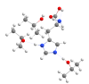
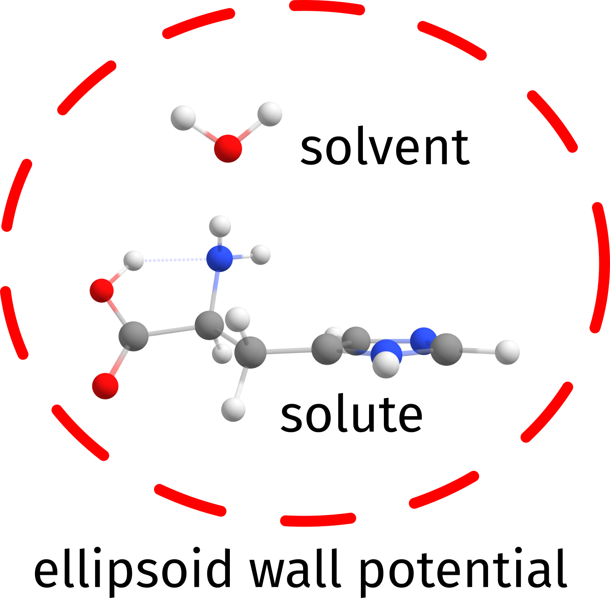

SOLVATOR：自动化显式溶剂化（Automated Explicit Solvation）¶
SOLVATOR 是一种自动向给定体系添加显式溶剂分子的算法。默认情况下，SOLVATOR 使用 DOCKER 算法。如果需要添加非常大量的溶剂分子，则可使用一种非常快速但精度较低的随机方法。ALPB 溶剂化模型用于在生成的团簇周围创建隐式连续溶剂化。目前 SOLVATOR 仅适用于 GFN-xTB 和 GFN-FF 方法。可用关键词和选项的完整列表见 solvator.keywords。
Note
与 ORCA 6.0 相比，ORCA 6.1 上的 DOCKER 在速度和精度方面都有了显著改进。这些变化也会改变 SOLVATOR 的结果，但这只是因为它们的结果会更加精确。
基本用法（Basic Usage）¶
默认的 SOLVATOR 通过 %SOLVATOR 块调用，通过 NSOLV <integer> 定义溶剂分子的数量。要添加的溶剂既可以通过 !ALPB(<solvent>) 简单输入关键词从 ORCA 的内部溶剂库中选取（参见 tab:modelchemistries.semiempirical.xtb.solvation.solvents），也可以通过提供自定义溶剂来指定。
Warning
- SOLVATOR 默认使用
CLUSTERMODE DOCKING，其设置等同于!QUICKDOCK（参见 DOCKER）。为了获得更准确的结果，可以使用!NORMALDOCK甚至!COMPLETEDOCK，但这些方法会慢得多！ - 与对接过程相关的所有选项均可通过
%DOCKER块控制，如 structurereactivity.docker 所述。 %GEOM块中给出的所有选项（如约束等）在溶剂对接过程中都会被遵守，但只能针对溶质给出。
一个简单的例子是使用默认设置和 GFN2-xTB 方法向组氨酸（Histidine）分子添加三个水分子。
20 structure (0 1) N 0.885996 -0.961304 -0.120339 C 1.798313 0.104987 0.275069 C 1.249714 0.744242 1.567548 O 1.573032 1.831447 1.951866 C 2.049102 1.187937 -0.781297 C 2.714441 0.645674 -1.999072 N 2.728606 1.335092 -3.185194 C 3.401683 0.571600 -4.081842 N 3.805612 -0.545068 -3.552995 C 3.389082 -0.516790 -2.258890 O 0.397674 -0.041862 2.212628 H 0.272440 -0.853698 1.671197 H 1.339440 -1.612664 -0.750009 H 0.086389 -0.572348 -0.612909 H 2.756495 -0.353470 0.548654 H 2.661849 1.969568 -0.321790 H 1.092545 1.646672 -1.057454 H 2.328734 2.246496 -3.338113 H 3.566873 0.866218 -5.098496 H 3.616501 -1.333139 -1.602802
!GFN2-XTB ALPB(WATER) PAL16 %SOLVATOR NSOLV 3 END * XYZ 0 1 N 0.885996 -0.961304 -0.120339 C 1.798313 0.104987 0.275069 C 1.249714 0.744242 1.567548 O 1.573032 1.831447 1.951866 C 2.049102 1.187937 -0.781297 C 2.714441 0.645674 -1.999072 N 2.728606 1.335092 -3.185194 C 3.401683 0.571600 -4.081842 N 3.805612 -0.545068 -3.552995 C 3.389082 -0.516790 -2.258890 O 0.397674 -0.041862 2.212628 H 0.272440 -0.853698 1.671197 H 1.339440 -1.612664 -0.750009 H 0.086389 -0.572348 -0.612909 H 2.756495 -0.353470 0.548654 H 2.661849 1.969568 -0.321790 H 1.092545 1.646672 -1.057454 H 2.328734 2.246496 -3.338113 H 3.566873 0.866218 -5.098496 H 3.616501 -1.333139 -1.602802 *
输出会报告所选的溶剂，以及关于其尺寸的一些细节、要添加的分子数目和所用方法。来自内部数据库的结构也总是会被打印出来。
3 structure O 0.000014 0.401429 0.000000 H 0.765192 -0.200729 0.000000 H -0.765206 -0.200700 0.000000
此外，溶剂化过程会按溶剂分子逐个监控，最终结果打印到文件 basename.solvator.xyz 中。还会有一个名为 basename.solvator.solventbuild.xyz 的中间文件，其中溶剂分子被逐一添加。在输出中，Einter 是 SOLVATOR 过程内所用 DOCKER 得到的相互作用能，dE 是当前与前一次 Einter 之差。
Adding solvent molecules to the solute ....
Iter Energy Einter dE Time
(Eh) (kcal/mol) (kcal/mol) (min)
-------------------------------------------------------
1 -39.452446 -4.331670 -4.331670 0.26
2 -44.544347 -4.316639 0.015031 0.34
3 -49.636018 -4.171990 0.144649 0.40
Final radius after microsolvation: .... 4.88 Angs
Time needed for microsolvation : .... 60.54 s
Final structured saved to : HIS.solvator.xyz
****ORCA-SOLVATOR TERMINATED NORMALLY****
Note
与 DOCKER 不同，在 SOLVATOR 算法中溶质默认是冻结的。在 %SOLVATOR 块中设置 FIXSOLUTE FALSE 可改变这一点。
以这种方式生成的溶剂化组氨酸分子如 fig:solvator_HIS_water 所示。

SOLVATOR 向组氨酸添加的三个水分子。
自定义溶剂（Custom Solvents）¶
SOLVATOR 方法本身与溶剂无关，原则上可以使用任何其他溶剂。如果所需溶剂在 ORCA 的内部溶剂数据库中不可用，可以通过 %SOLVATOR 块中的 SOLVENTFILE 关键词以 .xyz 格式提供自定义溶剂分子。
与 DOCKER 一样，可以在 solvent_file_name.xyz 的注释行上以两个整数给出溶剂的 charge（电荷）和 multiplicty（多重度）（默认为中性闭壳层）。由于 ALPB 方法只有有限的可用溶剂，介电常数 \(\epsilon\) 应近似取为最接近的可用溶剂。目前无法为 ALPB 定义自定义介电常数。
例如，通过提供一个 isopropanol.xyz 文件，可以用异丙醇（isopropanol）作为溶剂。在这种情况下，异丙醇的介电常数近似取为乙醇的介电常数。由于 ALPB 隐式溶剂化是相当粗略的隐式溶剂化模型，结果将足够相似。所得团簇如 fig:solvator_HIS_isoprop 所示。
12 0 1 C -3.79410 2.24670 -0.09622 C -3.45574 0.76660 -0.18820 H -2.94382 2.85306 -0.42645 H -4.00575 2.53923 0.93817 H -4.66172 2.49512 -0.71492 C -4.60559 -0.10847 0.28691 H -4.84802 0.09429 1.33594 H -4.32886 -1.16657 0.22730 H -5.50341 0.05251 -0.31744 O -2.30376 0.49878 0.60542 H -3.20686 0.51239 -1.22373 H -2.51694 0.72259 1.52758
!GFN2-XTB ALPB(ETHANOL) PAL16
%SOLVATOR
SOLVENTFILE "isopropanol.xyz"
NSOLV 3
END
* XYZFILE 0 1 HIS.xyz

solvator 添加的三个异丙醇分子。
随机方法（Stochastic Method）¶
如果你想添加数量非常庞大的显式溶剂分子，STOCHASTIC 模式会显著更快。可通过 %SOLVATOR 块中的 CLUSTERMODE STOCHASTIC 关键词调用。
Warning
CLUSTERMODE STOCHASTIC 是一种概率方法，其精度远不及 CLUSTERMODE DOCKING！尽管如此，它对不少应用仍然有用。
输出与默认方式生成的输出略有不同。在此例中，一百个水分子在数秒内被添加到组氨酸分子上（fig:solvator_HIS_100water）。
3 structure O 0.000014 0.401429 0.000000 H 0.765192 -0.200729 0.000000 H -0.765206 -0.200700 0.000000

使用 CLUSTERMODE STOCHASTIC 向组氨酸添加的一百个水分子。
随机方法的细节（Details on the Stochastic Method）¶
CLUSTERMODE STOCHASTIC 基本上使用随机试错法来确定溶剂的放置位置。该算法实际上利用自洽 EEQ 电荷 caldeweyher2019 的信息，作为一个简化势的一部分，以更合理的方式引导极性分子的放置。
在尝试将溶剂分子分配到某处并检查冲突之后，我们首先计算溶剂与溶质之间的静电能：
并将待最小化的目标函数（\(V\)）定义为该式的阻尼版本，使用溶质与溶剂原子之间的最小距离 \(R_{min}\)：
STOCHASTIC 模式即由为给定溶质寻找使 \(V\) 最小化的正确溶剂放置方式组成。阻尼函数的作用是确保：
- 静电相互作用随距离强烈衰减，
- 排斥能非常不利，以至于只有距离起作用。
其结果是溶剂分子被放置在尽可能靠近溶质的位置，并使静电相互作用最大化。这有助于创建溶剂壳层，使其看起来确实像人们期望从更精细的计算中得到的结果，但成本基本上为零。
添加每个溶剂后找到的 \(V\) 最佳值，就是输出中打印的 Target function：
Iter Target function Time
(min)
-------------------------------
1 -4.342597e-07 0.00
2 -3.166857e-07 0.00
3 -4.814590e-08 0.00
当使用 DROPLET 模式时，\(R_{min}\) 定义为到溶质质心的距离，而不是最近原子对之间的距离。
如果由于任何原因你不想包含静电分量，只需设置 %SOLVATOR USEEEQCHARGES FALSE END。将来也会提供其他电荷模型。
创建液滴（Creating a Droplet）¶
Warning
液滴模式及其变体仅适用于 CLUSTERMODE STOCHASTIC。
常规的随机方法会沿溶质的形状和拓扑创建溶剂化球壳。如有需要，可激活 DROPLET 模式以创建球形液滴，其大小要么由通过 NSOLV 添加的溶剂分子数控制，要么由通过 RADIUS 关键词控制的预设半径控制。若给定预设半径，solvator 将添加溶剂分子直至达到所需半径。
球形液滴通过 DROPLET TRUE 关键词调用。若尺寸由 NSOLV 定义，所得团簇将如 fig:solvator_HIS_100water_droplet 所示。
!XTB ALPB(WATER) PAL16
%SOLVATOR
NSOLV 100
CLUSTERMODE STOCHASTIC
DROPLET TRUE
END
* XYZFILE 0 1 HIS.xyz

SOLVATOR 强制球对称，在组氨酸周围添加的一百个水分子。
若最大半径由 RADIUS 定义，SOLVATOR 将添加必要数量的分子直至达到该半径。半径总是从溶质的质心取起。
!GFN2-XTB ALPB(WATER) PAL16
%SOLVATOR
RADIUS 15 # in angstroem
CLUSTERMODE STOCHASTIC
END
* XYZFILE 0 1 HIS.xyz
在此例中，输出打印实际达到的液滴半径和达到该半径所需的分子数，在本例中为 668。所得团簇如 fig:solvator_HIS_rad15 所示。
Desired sovent radius: .... 15.00 Angs
Actual sovent radius: .... 15.18 Angs
Final number of solvent molecules: .... 668 molecules

为达到约 15 Å 的半径而用 668 个水分子创建的液滴。
势（The Wall Potential）¶
如果使用默认的 CLUSTERMODE DOCKING 方法，则会添加一个人为的势以保证溶剂的添加方式为：先填满溶质周围第一溶剂化层的大部分，然后再放置到更远处。
Note
这在某种程度上类似于 Stefan Grimme 教授课题组最近发表的工作（称为"量子团簇生长（quantum cluster growth）"），但这里只使用单个外势 spicher_automated_2022。除此之外，本算法是独立的，与之无关。
从前面章节讨论的组氨酸示例的输出中可以看到，默认构建一个椭球势，其尺寸使其在所有方向上都能包围溶质加上至少一个溶剂分子（fig:solvator_HIS_wall）。

展示如何构建势以将溶剂分子保持在溶质空间附近的简单示意图。
由 %SOLVATOR 块中的 SOLVWALLFAC 控制的单个参数定义该势在溶质外部构建得有多远。其默认值为 1.0，将其增大到更大的值时，每增加一个单位，默认初始势将增大约溶质与溶剂最大尺寸之和的一半。
初始势默认不改变，除非 a) 算法无法放置溶剂，或 b) 所放置溶剂的能量高于之前。只有此时才会更新势以帮助分配下一个溶剂分子，并打印出当前标度因子的消息。
控制随机性（Controlling Randomness）¶
两种 clustermode，DOCKER 和 STOCHASTIC，本质上都依赖随机数。不过，ORCA 会设置固定的随机种子，使得在同一台机器上重复计算时总能得到相同的结果。
为使两者完全随机，请使用 %SOLVATOR 块中的 RANDOMSOLVATION TRUE 关键词。
真空搜索（Vacuum Search）¶
在某些情况下可能派上用场的一个选项是：使用 SOLVATOR 基于隐式溶剂化信息添加显式溶剂，但在尝试放置它们时实际上不使用任何隐式溶剂化。
例如，当你试图生成只能在气相中形成的溶质加溶剂的聚集体（周围没有其他溶剂分子）时，这很有用。这可以通过 %SOLVATOR 块中的 VACUUMSEARCH TRUE 关键词设置，此时计算能量和梯度时将忽略隐式溶剂化方法。在 STOCHASTIC 方法中，\(\epsilon_{solv}\) 将被设为 1.0。
Warning
在本版本发布之时，该算法尚未发表。相关论文正在准备中。
关键词（Keywords）¶
SOLVATOR 相关关键词的汇总见 tab:structurereactivity.solvator.keywords.block。
SOLVATOR 算法的 %SOLVATOR 块输入关键词。
| *关键词* | 选项 | 说明 |
|---|---|---|
NSOLV |
10 |
要添加的显式溶剂分子数。 |
SOLVENTFILE |
"solvent_file_name.xyz" |
自定义溶剂的文件。对于通过 ALPB(solvent) 可用的常规溶剂不需要。电荷和多重度可在注释行给出。 |
CLUSTERMODE |
docking |
添加新溶剂分子的对接方法（默认）。 |
| — | stochastic |
添加新溶剂分子的随机方法。默认为 docking。 |
PRINTLEVEL |
low |
低的打印详细程度。默认为 normal。 |
| — | normal |
正常的打印详细程度（默认）。 |
| — | high |
高的打印详细程度。默认为 normal。 |
RANDOMSOLV |
false |
使其完全随机（默认 = false）。 |
FIXSOLUTE |
true |
保持溶质受约束？（默认 = true） |
VACUUMSEARCH |
false |
激活真空中的搜索。（默认 = false） |
| 随机方法（Stochastic method）： | ||
USEEEQCHARGES |
true |
在随机模式下使用 eeq 电荷？默认为 true（默认 = true）。 |
DROPLET |
false |
创建球形液滴（默认 = false）。 |
RADIUS |
10 |
液滴的半径（单位为 Å）。将添加溶剂分子直至达到目标半径。 |
| 对接方法（Docking method）： | ||
WALLFAC |
1.0 |
用于定义势初始大小的因子。 |
Note
所有其他对接选项照常通过 %docker 块控制。!NORMALDOCK 和 !COMPLETEDOCK 等标志在这里同样适用。